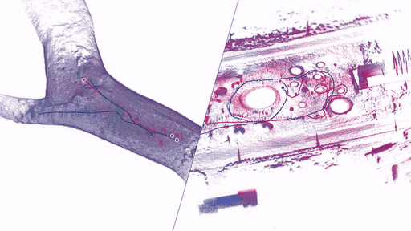

20261st AuthorJournal
SKiD-SLAM: Resource-Aware Distributed Multi-Robot LiDAR SLAM for Planetary Missions with Field Deployments at Analog Sites
IEEE Transactions on Field Robotics (T-FR 2026)
Resource-Aware Distributed Multi-Robot LiDAR SLAM for Planetary Missions